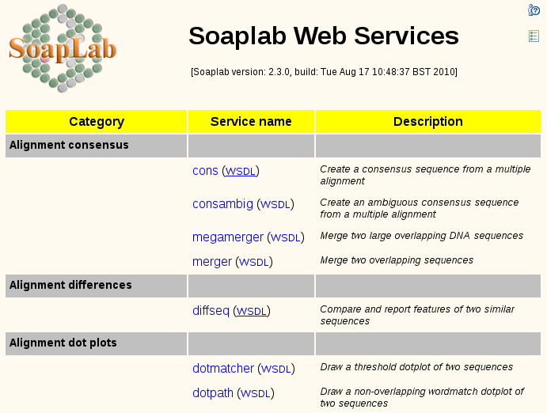

One of the unique features of Soaplab is its generic interface that makes it possible to use one single interface when accessing any Soaplab Web Services regardless of the command line interface of underlying programs. However it is not possible to specify input/output data types as part of Soaplab generic WSDL; instead the interface accommodates methods to query this information. This difference from common WSDL interfaces, for example, doesn't allow standard Web Services clients to check/validate input data before sending a request or output data after a response has been received. There was a growing concern in Bioinformatics Web Services community that Soaplab should include input/output type descriptions at WSDL level. To address this concern, starting with version 2.2, Soaplab includes an interface called typed interface (sometimes typed services that includes input output type definitions at WSDL level. This document describes how to use such services.
Currently, Soaplab does not provide any Java client library for accessing the typed services; no equivalent of the class org.soaplab.clients.SoaplabBaseClient that is used for Soaplab regular services. Therefore, the typed services are used via their WSDLs. After all, this was the main reason for having typed services.
Each typed service has two WSDLs: one with and one without semantic annotations. The semantic annotation is an W3C extension of the WSDL - and it may (even should) be accepted by all tool kits and tools consuming WSDLs. But in reality, there may be tools that are confused by this extension. Therefore, you have a choice what WSDL to use. Here is an example of a semantic annotation incorporated in a WSDL (the example uses EDAM ontology for annotations):
...
<portType name="diffseq">
<operation name="run">
<documentation>starts a job and returns its job identifier</documentation>
<sawsdl:attrExtensions sawsdl:modelReference="http://purl.org/edam/operation/EDAM:0000256"/>
<input message="tns:run"/>
<output message="tns:runResponse"/>
</operation>
...
The URLs of the services' WSDLs are the same as service endpoints with the suffix ?wsdl, or, for semantically annotated WSDLs, with the suffix .sa?wsdl. For example (using the default host, port and context names):
http://localhost:8080/soaplab2/typed/services/alignment_differences.diffseq?wsdl http://localhost:8080/soaplab2/typed/services/alignment_differences.diffseq.sa?wsdl
The Spinet web interface also
provides links to these WSDLs (right of the service names) - here is
an example:

#!/usr/bin/perl
use warnings;
use strict;
use XML::Compile::SOAP11;
use XML::Compile::WSDL11;
use XML::Compile::Transport::SOAPHTTP;
# read WSDL, compile in into a client who will call the service
my $service_endpoint =
'http://localhost:8080/soaplab2/typed/services/edit.seqret';
my $wsdl = XML::LibXML->new->parse_file ($service_endpoint . '?wsdl');
my $proxy = XML::Compile::WSDL11->new ($wsdl);
foreach my $schema ( 1, 2, 3 ) {
my $xsdXml =
XML::LibXML->new->parse_file( $service_endpoint . '?xsd=' . $schema );
if ($XML::Compile::SOAP::VERSION < 2.0) {
$proxy->schemas->importDefinitions ($xsdXml);
} else {
$proxy->importDefinitions ($xsdXml);
}
}
my $call = $proxy->compileClient ('runAndWaitFor');
# prepare inputs
my $inputs = {
sequence => { usa => 'asis:actttggg' }
};
# call the service
my ($answer, $trace) = $call->($inputs);
# check the response
die 'ERROR: ' . $answer->{Fault}->{'faultstring'} . "\n"
if defined $answer and defined $answer->{Fault};
die "Sorry, no response from the service\n\n"
unless defined $answer;
# print the results
for my $result (keys %{ $answer->{parameters} }) {
print "$result:\n" . '=' x length ($result) . "=\n";
print $answer->{parameters}->{$result};
print "\n";
}
When executed, it prints the same results as a regular Soaplab service:
detailed_status:
================
0
report:
=======
Summary:
Completed: Successfully
Termination status: 0
Started: 2010-Aug-16 12:48:34 (BST)
Ended: 2010-Aug-16 12:48:34 (BST)
Duration: 0:00:00.042
Report:
Name: edit.seqret
Job ID: [edit.seqret]_87d82c4.12a7a5ae329._7ffc
Program and parameters:
/usr/local/bin/seqret
-sequence
asis:actttggg
-outseq
o_outseq
-auto
--- end of parameters
Exit: 0
outseq:
=======
>asis
actttggg
outseq_url:
===========
http://localhost:8080/soaplab2/results/[edit.seqret]_87d82c4.12a7a5ae329._7ffc_outseq